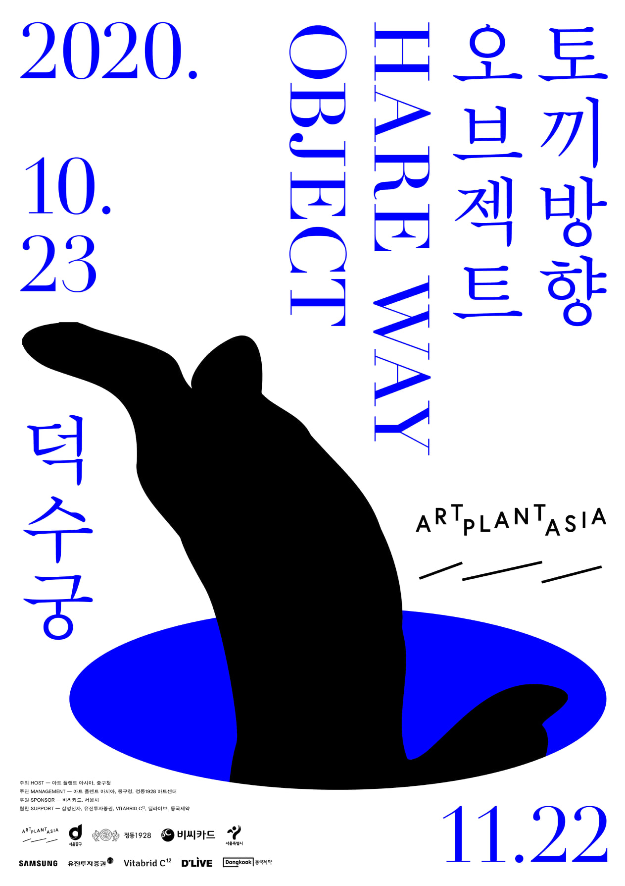

아트 플랜트 아시아 2020 토끼 방향 오브젝트
Bag with you_Stroller
5분 51초부터 6분 10초까지

<백 위드 유_스트롤러 Bag with you_Stroller>, 2020, 50개의 피스, 패브릭, 솜, 플라스틱 체인, 가변크기 <백 위드 유_스트롤러 Bag with you_Stroller>, 2020, 50개의 피스, 패브릭, 솜, 플라스틱 체인, 가변크기

<백 위드 유_스트롤러 Bag with you_Stroller>, 2020, 50개의 피스, 패브릭, 솜, 플라스틱 체인, 가변크기 <백 위드 유_스트롤러 Bag with you_Stroller>, 2020, 50개의 피스, 패브릭, 솜, 플라스틱 체인, 가변크기

<백 위드 유_스트롤러 Bag with you_Stroller>, 2020, 50개의 피스, 패브릭, 솜, 플라스틱 체인, 가변크기 <백 위드 유_스트롤러 Bag with you_Stroller>, 2020, 50개의 피스, 패브릭, 솜, 플라스틱 체인, 가변크기

<백 위드 유_스트롤러 Bag with you_Stroller>, 2020, 50개의 피스, 패브릭, 솜, 플라스틱 체인, 가변크기 <백 위드 유_스트롤러 Bag with you_Stroller>, 2020, 50개의 피스, 패브릭, 솜, 플라스틱 체인, 가변크기

《아트 플랜트 아시아 2020 : 토끼 방향 오브젝트》 《아트 플랜트 아시아 2020 : 토끼 방향 오브젝트》
- 장소: 덕수궁 (서울 중구 세종대로 99)
- 기간: 2020년 10월 23일(금)~2020년 11월 22일(일)
- 관람시간: 10:00~18:00, 월요일 휴무
(매주 1회 소그룹 야간 전시 투어 프로그램 진행, 추후 일정 공지)
입장료: 1,000원(덕수궁 입장료)
⠀ - 참여작가
① 한국 동시대 작가(19명/팀): 강서경, 구동희, 김희천, 박광수, 박경률, 박정혜, 슬기와민, 안정주+전소정, 양혜규, 오종, 우한나, 이불, 이우성, 임영주, 정은영, 정지현, 정희승, 차재민, 최고은
② 한국 근현대 작가(11명/팀): 김혜련, 김흥수, 김환기, 김홍주, 남관, 박서보, 박수근과 주호회(최영림, 황유엽, 홍종명, 박창돈), 김창열, 윤형근, 이우환
③ 해외 작가(3명): 로이스 응(Royce Ng), 호루이안(Ho Rui An), 호추니엔(Ho Tzu Nyen)
⠀ - 총감독: 이승현
- 큐레이터: 윤율리, 장혜정
- 해외 작가 커미셔너: 김성희
- 주최/주관: 아트 플랜트 아시아, 중구청
- 후원: BC카드, 서울특별시
- 협찬: 삼성전자, 유진투자증권, Vitabrid C¹², 딜라이브, 동국제약
Art Plant Asia 2020’s main exhibition 《Hare Way Object》 held at Deoksugung Palace in Seoul from October 23 to November 22, 2020. We have showcased the works of 33 artists/teams comprising Korean Modern masters, contemporary artists of Korea and other Asian countries, who have demonstrated excellence in their recent practice, and examines the current of Korean and Asian Contemporary Art. The works exhibited in the main halls, corridors, and courtyards of Deoksugung Palace and the entire exhibition is designed as a safe viewing environment while maintaining a social distance in the era of the pandemic.
⠀
𝗔𝗿𝘁 𝗣𝗹𝗮𝗻𝘁 𝗔𝘀𝗶𝗮 𝟮𝟬𝟮𝟬: 𝗛𝗮𝗿𝗲 𝗪𝗮𝘆 𝗢𝗯𝗷𝗲𝗰𝘁
⠀
• Deoksugung Palace 99 Sejong-daero, Jeong-dong, Jung-gu, Seoul Korea
• Dates: 2020. 10. 23 (Fri) ~ 2020. 11. 22 (Sun)
• Hours: 10:00 ~ 18:00, Closed on Mondays
(Limited capacity night tours held once weekly, future schedules to be announced)
• Admission fees: 1,000 KRW (General admission for Deoksugung Palace)
⠀
• Artists
Cha Jeamin, Choi Goen, Chung Heeseung, , Ho Tzu Nyen, Ho Rui An, IM Youngzoo, Jung Jihyun, Jun Sojung+An Jungju, Kim Heecheon, Kim Heryun, Kim HeungSou, Kim HongJoo, Kim Whanki, Koo Donghee, Kim Tschang-yeul, Lee Bul, Lee Ufan, Lee Woosung, Nam Kwan, Park Gwangsoo, Park Kyung Ryul, Park Junghae, Park Seo-Bo, Park SooKeun with Juho Club (Choi Yeong-Lim, Hwang Yoo-Yeop, Hong Jong-myung, Park Chang-Don), Royce Ng, siren eun young jung, Sulki and Min, Suki Seokyeong Kang, Jong Oh, Woo Hannah, Yang Haegue, Yun Hyong Keun
⠀
• Director: Lee Seunghyun
• Curators: Yoon Juli, Jang Hyejung
• International Artists Commissioner: Kim Seonghee
• Hosts: Art Plant Asia, Jung-gu Office
• Organizers: Art Plant Asia, Seoul Metropolitan Government, Jung-gu Office, Jeongdong 1928 Art Center
• Sponsors: BC Card, Seoul Metropolitan Government
• Support: Samsung Electronics, Eugene Investment & Secur, Vitabrid C¹², D’LIVE, DongKook Pharmaceutical
아트 플랜트 아시아 2020 주제전 《토끼 방향 오브젝트》는 지금 가장 인상적인 활동을 펼치고 있는 차세대 작가들을 중심으로 한국 현대미술의 흐름을 살핀다. 한국 근현대 미술의 거장들과 동시대 작가, 아시아 작가 총 33인의 작업이 덕수궁 전각, 행각, 야외를 무대로 전시된다.
근현대 방은 함녕전 행각의 일부를 이용해 한국 전후미술과 1970년대 미술을 새롭게 검토한다. 침략과 전쟁이라는 재난 이후 이성 대신 물질과 신체를 강조했던 현대미술의 동향은 과거의 영광스러운 기원에 대한 열망을 공감각적으로 표현했던 전후 박수근, 김환기 등의 작업과 공명한다. 근현대 방 1은 박수근과 주호회를 비롯한 그 주변 작가들을 파리에서 앵포르멜을 직접 경험한 김환기, 김흥수, 남관 등과 겹쳐두고, 이를 다시 동시대 작가 김혜련의 작업과 병치한다. 근현대 방 2에는 1970년대 등장한 이우환, 박서보, 윤형근, 김창열의 작품이 동시대 작가 김홍주의 극사실회화와 함께 놓인다. 단색화가 실재의 추구라는 문제의식을 무심한 반복을 통한 물아일체로 구현했다면, 같은 시기 김홍주는 세밀한 수공 작업으로 조선 초상화의 전신사조(傳神寫照) 전통을 재현함으로써 격물치지를 실천했다. 이들은 추상과 구상이라는 상반된 양식에도 불구하고 우주와 사물의 이치를 궁구하는 성리학적 이념을 회화적 행위를 통해 드러냈다. 특히 김홍주는 전통이론과 서구이론, 엘리트미술과 대중미술, 담론과 실천 사이를 무작위로 횡단하면서 당대 현대미술의 흐름을 선택적이고 자의적으로 참조한 독특한 사례다.
한국 및 아시아 작가들의 동시대 미술 작품은 석어당, 준명당, 즉조당 등의 전각, 그리고 함녕전 행각과 야외 공간에 자리한다. 기술적 진보와 이에 따른 욕망의 명암을 성찰하는 이불의 〈키아즈마〉(2005)를 포함해 정희승의 장미 연작 〈Rose is a rose is a rose〉(2016), 강서경의 〈둥근 유랑〉(20182019), 〈좁은 초원〉(20132018), 양혜규의 〈Sonic Obscuring Hairy Hug〉(2020) 등이 전시된다. 외국에서 온 사신과 손님이 머물렀다는 준명당에는 호추니엔(Ho Tzu Nyen)의 〈노 맨 II〉(2017)가 설치되어 인류가 오랜 시간에 걸쳐 만들어낸 상상 속 존재들이 서성인다. 이 밖에 박경률, 박광수, 박정혜, 호루이안(Ho Rui An)과 로이스응(Royce Ng)의 작업, 슬기와 민의 새로운 ‘테크니컬 드로잉’ 시리즈가 관객을 맞는다. 고종이 커피를 즐기던 러시아식 건축물 정관헌은 정은영, 차재민, 김희천의 영상 작품을 상영하는 열린 극장으로 변주된다.
덕수궁의 장소적, 역사적 특성에 반응하며 제작된 커미션 작품들은 주로 야외 공간에 설치된다. 덕수궁 연못에 조각을 띄우는 구동희, 궁 내부 기물을 석탑 양식으로 복원하는 최고은, 해태로부터 영감을 얻어 상상의 동물을 디오라마 석재로 제작하는 정지현, 무용수의 신체와 기계의 시점을 활용해 덕수궁을 기록하고 표현한 안정주 + 전소정의 신작이 소개된다. 오디오 가이드 형식을 빌은 임영주, ‘입는 봉제 조각’을 대여하는 우한나의 작업은 관객들에게 익명의 타인과 임시적 연결 상태에 놓이는 경험을 은유적으로 제공하며, 오종과 이우성은 지난 활동의 연장에서 여백과 같은 덕수궁의 잉여 공간을 활용하거나 그 풍경을 실내로 끌어들이며 각각의 질문을 담은 신작을 선보인다.
이번 주제전시의 제목은, 덕수궁이 위치한 정동 쪽을 의미하는 옛말 중 하나인 ‘묘방’(卯方)과 인간중심지 바깥의 모든 객체를 지시하는 단어 ‘오브젝트’가 의미를 파악할 수 없는 나열로 조합된 스크래블이다. 어쩌면 이것이 당대의 한국 미술 또는 아시아 미술의 모습일 수 있다는 가정과 함께 《토끼 방향 오브젝트》는 수수께끼의 군도처럼 존재하는 이들을 잇는다.
Art Plant Asia 2020’s main exhibition Hare Way Object centers around up-and-coming artists, who have demonstrated excellence in their recent practice, and examines the trends of Korean Contemporary Art. Hare Way Object will showcase the works of 33 artists comprising Korean Modern masters, contemporary artists of Korea and other Asian countries in the main halls, corridors, and courtyards of Deoksugung Palace.
One section of the corridor of Hamnyeongjeon will be used to display Modern and Contemporary artworks from postwar and 1970s Korea. The art tendency of the time, mainly characterized by its emphasis on matter and body over reason in the aftermath of the Korean War, will resonate with the synaesthetic expression of postwar art by artists such as Park SooKeun and Kim Whanki who focused on the glorious origins of the past. In Modern and Contemporary room 1, works by Park SooKeun and other artists around the Joo-ho group will be displayed alongside those of Kim Whanki, Kim Heungsou, and Nam Kwan who directly witnessed the Arte Informale movement in Paris. These works will be juxtaposed by the works of contemporary artist Kim Heryun. In Modern and Contemporary room 2, works of 1970s artists Lee Ufan, Park Seo-Bo, Yun Hyong Keun, and Kim Tschangyeul will accompany the hyperrealistic paintings of contemporary artist Kim HongJoo. While Dansaekhwa (Korean monochrome painting) embodies the philosophy “unity of object and ego” by means of absentminded repetition, contemporary paintings of Kim HongJoo achieves “the investigation of things”
Confucian scholar Zhu Xi (1130–1200) advocated “the investigation of things (格物致知)” as a method of self cultivation.
through its elaborate representation of “vivid portrayal(傳神寫照),” a tradition behind Joseon Dynasty portraits. Despite the conflicting styles of figuration and abstraction, the artists in this hall unanimously practiced their Neo-Confucian ideology of investigating the cosmos through the act of painting. In particular, Kim HongJoo’s practice is a unique example of using the trends of Contemporary Art selectively and arbitrarily by freely navigating between traditional Korean theory and Western theory of art, high culture and popular culture, theory and practice.
The contemporary artworks by Korean and other Asian artists will be housed in the halls of Seogeodang, Junmyeongdang, Jeukjodang, the corridors of Hamnyeongjeon, and the outdoor courtyards. The exhibit works include Lee Bul’s Chiasma (2005), a reflection on technological progress and human desires; Chung Heeseung’s Rose is a rose is a rose (2016), a continuation of Chung’s rose portrait series; Suki Seokyeong Kang’s Rove and Round (2018–2019) and Narrow Meadow(2013–2018); Yang Haegue’s Sonic Obscuring Hairy Hug (2020); and others. Ho Tzu Nyen’s video installation No Man II (2017) will present digitally created figures based on a long process of imagination in human history within the hall of Junmyeongdang, which was originally designated for foreign envoys and guests during the Joseon Dynasty. In addition, the works of Park Kyung Ryul, Park Gwangsoo, Park Junghae, Ho Rui An, Royce Ng, as well as Sulki and Min’s “technical drawing” series will greet the audience from different parts of the palace. The Russian style Jeonggwanheon, a spot where Emperor Gojong occasionally had coffee, will be transformed into an open theater for screening the works by siren eun young jung, Cha Jeamim, and Kim Heecheon.
The newly commissioned works displayed primarily in the outdoor courtyards echo the geographical and historical features of Deoksugung Palace. These works include Koo Donghee’s installation which will float on the Deoksugung Pond; Choi Goen’s reenactment of the palace interiors in the form of a pagoda; Jung Jihyun’s stone diorama of an imaginary animal inspired by haetae;
A haetae is a mythical beast, often described as a unicorn lion. In ancient Korea, haetae was believed to be a guardian that fends off natural disasters.
and An Jungju + Jun Sojung’s documentation / depiction of Deoksugung Palace through a dancer’s body and the perspective of a machine. Both IM Youngzoo’s work that adopts the audio guide method and Woo Hannah’s work which rents wearable sewing pieces to people, metaphorically provide the audience with a temporary experience of connecting with anonymous others. Furthermore, Jong Oh and Lee Woosung each present a piece based on their exploration of perspective by utilizing unoccupied “blank” spaces of Deoksugung Palace or transferring the outside scenery indoors.
The title of this exhibition Hare Way Object is an arbitrary combination of “Hare Way(卯方),” an old term for the Jeongdong area in which Deoksugung Palace is located, and “Object,” a word that dictates all beings outside of mankind. Suggesting that this could portray Korean art or Asian art at large, floating apart from one another like an archipelago, Hare Way Object attempts to bridge the gaps.